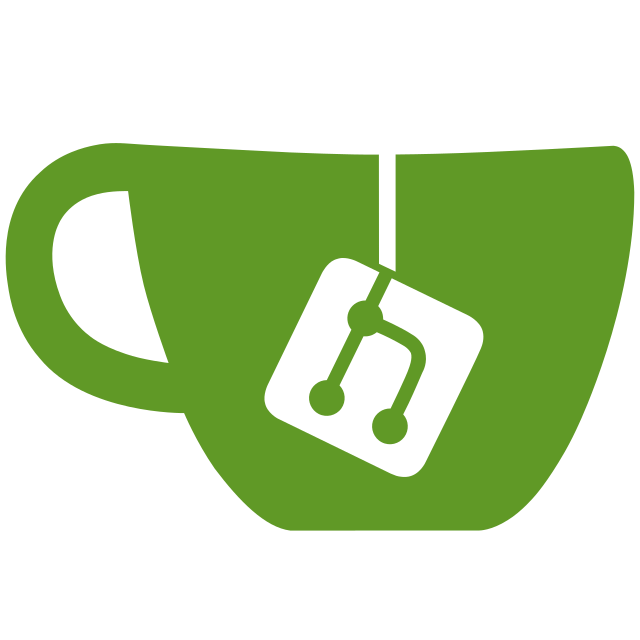

Git hosting
Repositories over SSH and HTTP(S), with users, organizations, teams, and permissions.
July 2026
Run your own collaborative Git service—and complete the whole path from issue to tested merge.

Goal
main.Agenda
Mental Model
Repositories over SSH and HTTP(S), with users, organizations, teams, and permissions.
Issues, pull requests, reviews, projects, releases, wikis, and notifications.
Gitea Actions plus external runners, webhooks, and a REST API.
Package registries for OCI images and common language ecosystems.
Demo Architecture
The container is disposable. The volume is not.
Start Gitea
# Apple container CLI — tested with Gitea 1.26.4
container volume create gitea-data
container run --name gitea --detach \
--publish 3000:3000 \
--publish 2222:22 \
--volume gitea-data:/data \
--env GITEA__server__SSH_PORT=2222 \
--env GITEA__server__ROOT_URL=http://localhost:3000/ \
docker.gitea.com/gitea:1.26.4
# Observe startup
container logs giteaAdapted from the official container installation guide; commands use Apple container.
First Run
30002222/data
The official image keeps configuration, repositories, attachments, indexes, and the SQLite database under the persistent data tree.
Repository Setup
Stable owner for repositories, packages, runners, and shared identity.
Group people by responsibility and grant repository-unit permissions.
Choose visibility, initialize a README, then add collaborators and rules.
Demo: create organization tea-lab, team developers, and repository hello-gitea.
Everyday Git
# Add an SSH key in User settings → SSH / GPG Keys first
git clone ssh://git@localhost:2222/tea-lab/hello-gitea.git
cd hello-gitea
git switch -c feature/greeting
printf 'Hello from Gitea\n' > greeting.txt
git add greeting.txt
git commit -m "Add a friendly greeting"
git push -u origin feature/greetingThe push response links directly to the compare page for creating a pull request.
Collaboration Loop
Pull requests support comments, requested changes, approval, and merge. Source: Gitea pull request documentation.
Pull Request
Use a descriptive title, explain the reason, and link the issue with Closes #1.
Comment on exact lines, request changes, or approve the proposed branch.
Require tests and status checks before the merge button becomes available.
Demo: open a pull request, request one tiny change, push the fix, approve, then merge.
Branch Protection
mainCreate a rule for main. For release branches, use a pattern such as release/*. Put specific patterns ahead of broad fallbacks.
Source: Protected branches.
Gitea Actions
# .gitea/workflows/test.yaml
name: test
on: [push, pull_request]
permissions:
contents: read
jobs:
test:
runs-on: ubuntu-latest
steps:
- uses: actions/checkout@v4
- run: test "$(cat greeting.txt)" = "Hello from Gitea"Enable Actions for the repository and register a Gitea runner. Prefer a separate runner host for real workloads.
Source: Gitea Actions quick start and job token permissions.
Runner Boundary
localhost; job environments must be able to reach the instance URL.Package Registry
# Generic package example
export GITEA_TOKEN='…'
curl --user "patrick:$GITEA_TOKEN" \
--upload-file hello.tar.gz \
http://localhost:3000/api/packages/tea-lab/generic/hello/1.0.0/hello.tar.gzGitea supports OCI containers, Swift, npm, Maven, NuGet, PyPI, Cargo, generic files, and many other package formats.
Use a personal access token with package write permission—not an account password.
Source: Package registry overview and generic packages.
API
# List repositories for an organization
curl --header "Authorization: token $GITEA_TOKEN" \
http://localhost:3000/api/v1/orgs/tea-lab/repos
# Built-in API explorer
open http://localhost:3000/api/swaggertea CLI for common Gitea operationsProduction Shape
Use PostgreSQL or MySQL when operational scale, tooling, or availability requires it.
Terminate HTTPS at a reverse proxy and set ROOT_URL, domain, and SSH ports correctly.
Connect SMTP and your authentication provider; restrict registration and administrator access.
Plan capacity for repositories, LFS, attachments, Actions artifacts, packages, and backups.
Backup
Read release notes → stage the new version → stop → back up → change the pinned image tag → start → verify migrations and core workflows.
Sources: Backup and Restore and Upgrade from an old Gitea.
Security Baseline
Practical Exercise
main, then prove a direct push is rejected.Stretch goal: add the workflow from the Actions slide and require its status check.
Decision
July 2026
Keep the workflow familiar.
Patrick Stein
References